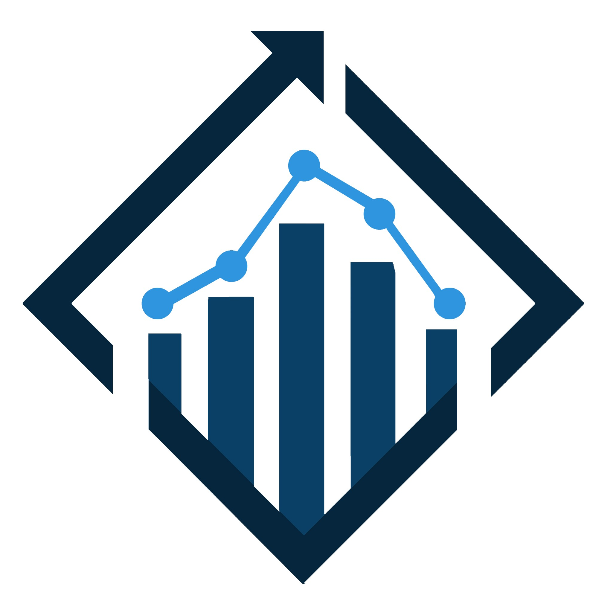

MEAL Bridge LLC partners with NGOs, UN agencies, governments, and development organizations to strengthen Monitoring, Evaluation, Accountability, and Learning through consulting, training, and evidence-based solutions.

We collaborate with organizations committed to improving lives through stronger Monitoring, Evaluation, Accountability, and Learning systems.
Supporting humanitarian and development organizations.
Supporting accountability and programme excellence.
Strengthening organizational capacity and sustainability.
Delivering measurable and sustainable impact.
Developing future MEAL professionals.
Building evidence-based public sector systems.

MEAL Bridge LLC is a consulting, training, and capacity development company dedicated to strengthening Monitoring, Evaluation, Accountability, and Learning systems.
We combine international standards, local contextual knowledge, practical recommendations, and evidence-based approaches to help organizations improve performance, accountability, and decision-making.
We help organizations strengthen systems, improve performance, and make better decisions through specialized MEAL services.
Design and strengthen complete MEAL systems aligned with organizational objectives.
Learn More →Improve project performance through robust monitoring and evaluation frameworks.
Learn More →Build transparent feedback and complaint mechanisms that strengthen trust.
Learn More →Independent monitoring services that improve credibility and donor confidence.
Learn More →Practical learning programmes that build lasting organizational capacity.
Learn More →Digital tools, automation, AI, and dashboards that improve decision-making.
Learn More →We combine technical excellence, regional understanding, and practical implementation to deliver solutions that create lasting organizational value.
Every assignment follows structured quality assurance processes to ensure reliable, consistent, and high-value outputs.
International best practices adapted to local realities across Syria and the wider MENA region.
Recommendations designed for implementation—not reports that remain on a shelf.
Experienced professionals committed to technical excellence and ethical practice.
Reliable data transformed into meaningful insights for informed decision-making.
Learning is embedded into every engagement to strengthen future performance.
Every engagement follows a clear methodology designed to understand your needs, strengthen your systems, and create sustainable impact.
We listen carefully to understand your organization, objectives, challenges, and operational context.
We assess existing MEAL systems, identify strengths, weaknesses, gaps, and opportunities for improvement.
Together we develop practical solutions aligned with international standards and your local context.
We support implementation through technical guidance, coaching, mentoring, and organizational capacity development.
Continuous learning ensures improvements remain sustainable and continue creating value beyond the assignment.
The MEAL Bridge LLC Academy equips professionals and organizations with practical skills, internationally aligned methodologies, and real-world experience to strengthen Monitoring, Evaluation, Accountability, and Learning systems.


MEAL Bridge LLC was established with a simple belief: stronger organizations are built through stronger MEAL systems.
Our leadership combines years of practical humanitarian, development, monitoring, evaluation, accountability, and learning experience with a commitment to ethical practice, innovation, and measurable impact.
Ethical decisions and professional responsibility.
Practical solutions that improve organizational performance.
Continuous learning and smarter MEAL solutions.
We believe sustainable change happens through collaboration. MEAL Bridge LLC welcomes partnerships that strengthen organizations, communities, and the MEAL profession.
Joint projects, technical assistance, organizational strengthening, and MEAL system development.
Academic partnerships, internships, research collaboration, and professional development.
Institutional capacity development, policy support, and public sector MEAL systems.
Join our growing professional network and collaborate on regional assignments.
Let's explore opportunities to strengthen MEAL systems and create lasting impact.
Become a PartnerPractical, instructor-led courses designed for humanitarian, development, and public sector professionals.
Introduction to Monitoring, Evaluation, Accountability and Learning.
Design complete organizational MEAL systems from strategy to implementation.
Build effective feedback, complaint and accountability mechanisms.
Our objective is not simply to complete assignments, but to leave organizations stronger than we found them.
Practical systems that improve planning, monitoring, accountability and learning.
Reliable evidence that supports timely, informed and strategic decisions.
Stronger engagement with communities, donors and stakeholders.
Skills and systems that continue delivering value long after the consultancy ends.
Everything you need to know before working with MEAL Bridge LLC.
We support NGOs, INGOs, UN agencies, governments, universities and development organizations across the MENA region.
Yes. Most consulting, coaching and training services are available remotely, while selected assignments are delivered on-site.
Absolutely. Every organization has different needs, therefore programmes can be tailored.
Yes. Participants who successfully complete eligible programmes receive MEAL Bridge LLC certificates.
Simply contact us through the Contact page and we will arrange an introductory meeting.
Whether you need consultancy, training or technical support, we're ready to help your organization achieve measurable results.
Let's Start the Conversation